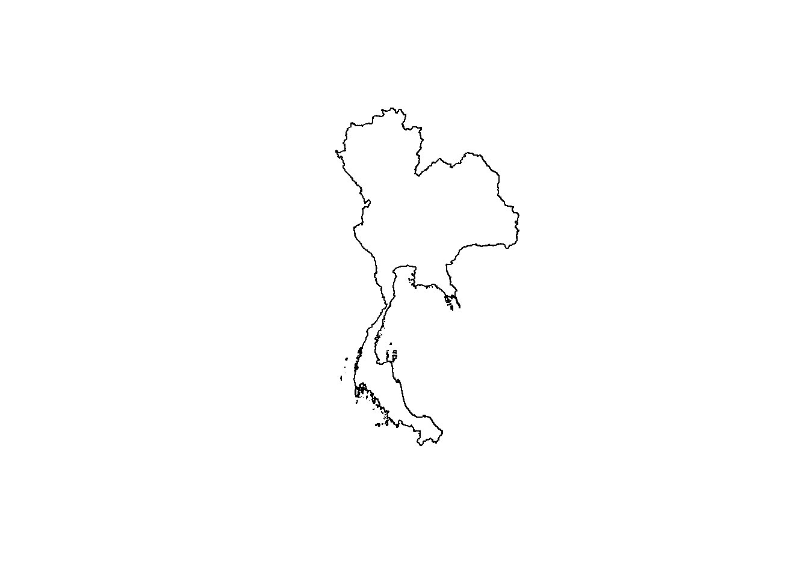
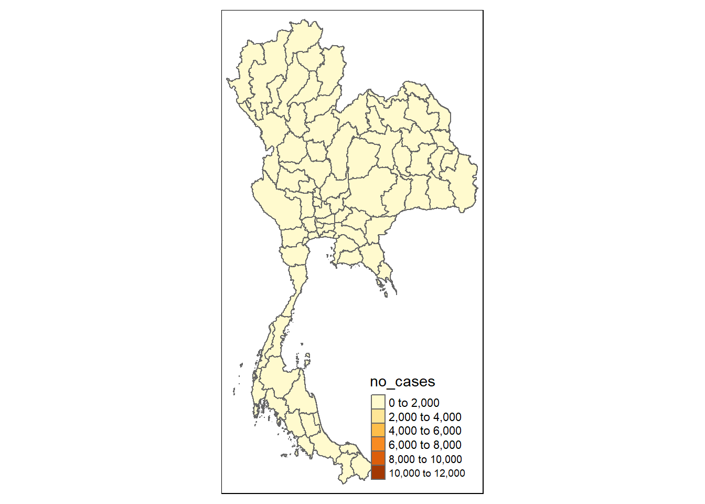
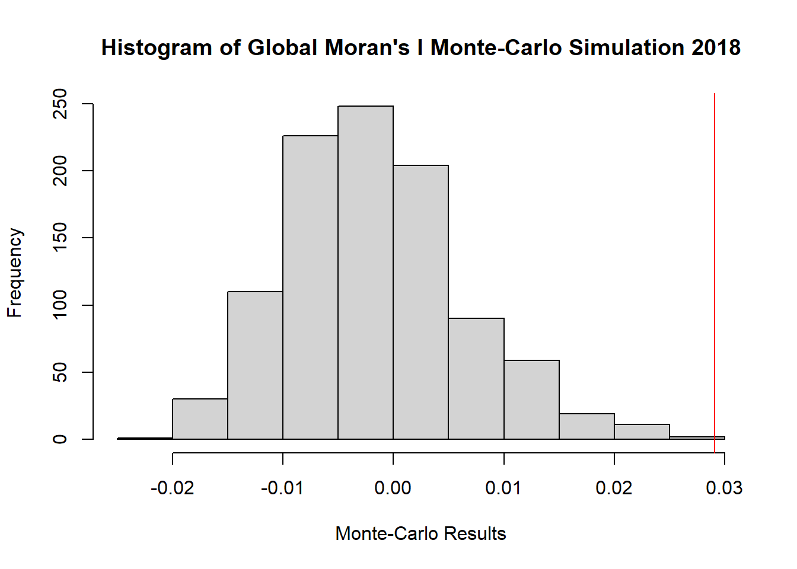
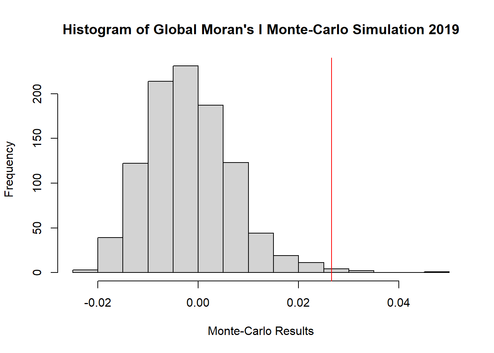
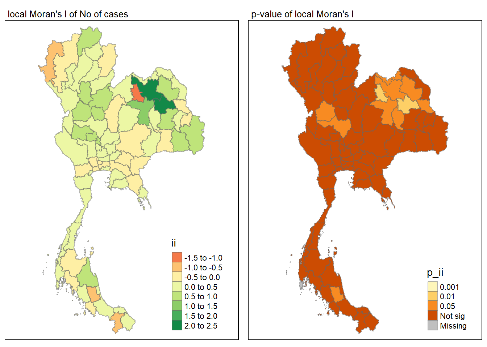
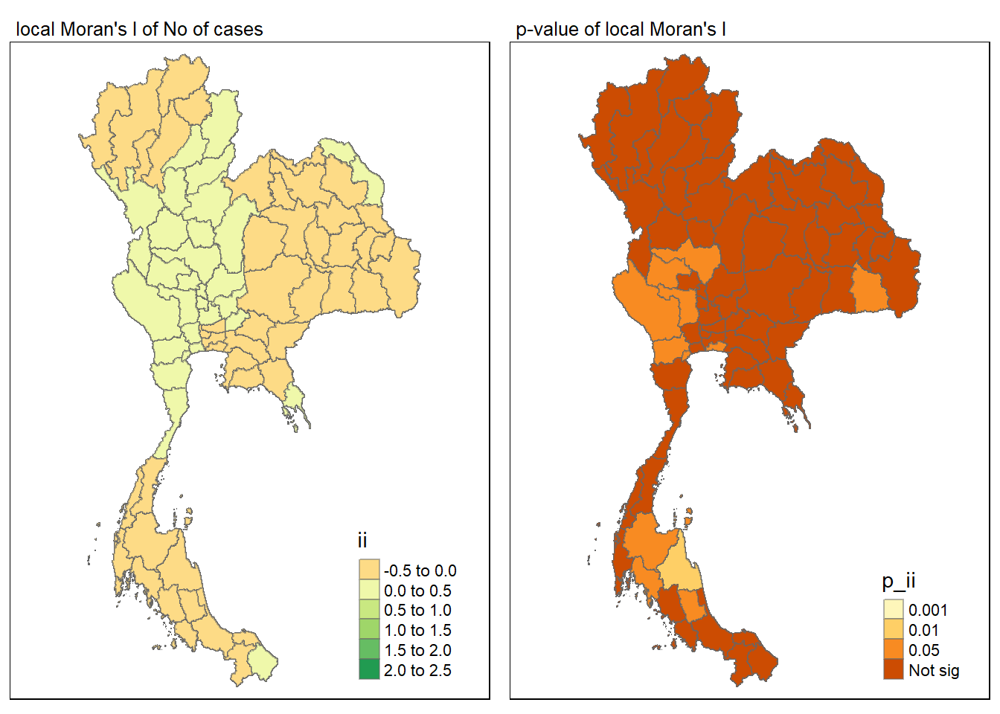
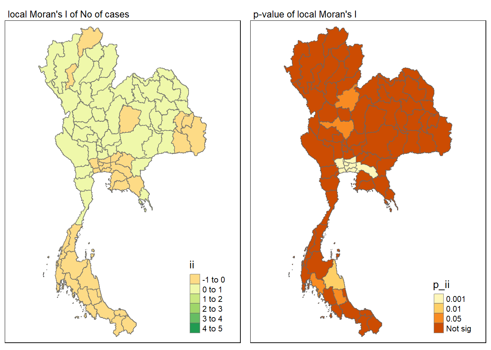

pacman::p_load(sf, sfdep, tmap, tidyverse, knitr)Take-Home Exercise 2
Take-Home
Code
Background
Drug abuse is associated with significant negative health, financial and social consequences. Yet, illicit drug consumption remains highly prevalent and continues to be a growing problem worldwide. In 2021, 1 in 17 people aged 15–64 in the world had used a drug in the past 12 months. Notwithstanding population growth, the estimated number of drug users grew from 240 million in 2011 to 296 million in 2021.
The geopolitics of Thailand which is near the Golden Triangle of Indochina, the largest drug production site in Asia, and the constant transportation infrastructure development made Thailand became market and transit routes for drug trafficking to the third countries.
In Thailand, drug abuse is one of the major social issue. There are about 2.7 million youths using drugs in Thailand. Among youths aged between 15 and 19 years, there are about 300,000 who have needs for drug treatment. Most of Thai youths involved with drugs are vocational-school students, which nearly doubles in number compared to secondary-school students.
Objectives
If the key indicators of drug abuse of Thailand are independent from space.
If the indicators of drug abuse is indeed spatial dependent, then, you would like to detect where are the clusters and outliers, and the hotspots.
Last but not least, you are also interested to investigate how the observation above evolve over time.
Dataset
Thailand Drug Offenses [2017-2022] at Kaggle.
Thailand - Subnational Administrative Boundaries at HDX. You are required to use the province boundary data set.
Packages
sf provides a standardised way to work with spatial vector data (points, lines, polygons)
spdep focuses on spatial econometrics and spatial statistics
tmap create thematic maps
tidyverse for easy data manipulation and some visualisation
knitr facilitates the integration of R code and documentation in reproducible research reports
Importing data
Let’s load the csv file from kaggle about Thailand’s drug offenses
thai_drug <- read_csv("data/thai_drug_offenses_2017_2022.csv")Rows: 7392 Columns: 5
── Column specification ────────────────────────────────────────────────────────
Delimiter: ","
chr (3): types_of_drug_offenses, province_th, province_en
dbl (2): fiscal_year, no_cases
ℹ Use `spec()` to retrieve the full column specification for this data.
ℹ Specify the column types or set `show_col_types = FALSE` to quiet this message.set.seed(2932)class(thai_drug)[1] "spec_tbl_df" "tbl_df" "tbl" "data.frame" Next let’s load the shapefile of Thailand’s province boundary
thai_sf <- st_read(dsn = "data/",
layer = "tha_admbnda_adm1_rtsd_20220121")Reading layer `tha_admbnda_adm1_rtsd_20220121' from data source
`C:\IS415\Take-home_Ex\Take-home_Ex02\data' using driver `ESRI Shapefile'
Simple feature collection with 77 features and 16 fields
Geometry type: MULTIPOLYGON
Dimension: XY
Bounding box: xmin: 97.34336 ymin: 5.613038 xmax: 105.637 ymax: 20.46507
Geodetic CRS: WGS 84thai_sfSimple feature collection with 77 features and 16 fields
Geometry type: MULTIPOLYGON
Dimension: XY
Bounding box: xmin: 97.34336 ymin: 5.613038 xmax: 105.637 ymax: 20.46507
Geodetic CRS: WGS 84
First 10 features:
Shape_Leng Shape_Area ADM1_EN ADM1_TH ADM1_PCODE
1 2.417227 0.13133873 Bangkok กรุงเทพมหานคร TH10
2 1.695100 0.07926199 Samut Prakan สมุทรปราการ TH11
3 1.251111 0.05323766 Nonthaburi นนทบุรี TH12
4 1.884945 0.12698345 Pathum Thani ปทุมธานี TH13
5 3.041716 0.21393797 Phra Nakhon Si Ayutthaya พระนครศรีอยุธยา TH14
6 1.739908 0.07920961 Ang Thong อ่างทอง TH15
7 5.693342 0.54578838 Lop Buri ลพบุรี TH16
8 1.778326 0.06872655 Sing Buri สิงห์บุรี TH17
9 2.896316 0.20907828 Chai Nat ชัยนาท TH18
10 4.766446 0.29208711 Saraburi สระบุรี TH19
ADM1_REF ADM1ALT1EN ADM1ALT2EN ADM1ALT1TH ADM1ALT2TH ADM0_EN ADM0_TH
1 <NA> <NA> <NA> <NA> <NA> Thailand ประเทศไทย
2 <NA> <NA> <NA> <NA> <NA> Thailand ประเทศไทย
3 <NA> <NA> <NA> <NA> <NA> Thailand ประเทศไทย
4 <NA> <NA> <NA> <NA> <NA> Thailand ประเทศไทย
5 <NA> <NA> <NA> <NA> <NA> Thailand ประเทศไทย
6 <NA> <NA> <NA> <NA> <NA> Thailand ประเทศไทย
7 <NA> <NA> <NA> <NA> <NA> Thailand ประเทศไทย
8 <NA> <NA> <NA> <NA> <NA> Thailand ประเทศไทย
9 <NA> <NA> <NA> <NA> <NA> Thailand ประเทศไทย
10 <NA> <NA> <NA> <NA> <NA> Thailand ประเทศไทย
ADM0_PCODE date validOn validTo geometry
1 TH 2019-02-18 2022-01-22 -001-11-30 MULTIPOLYGON (((100.6139 13...
2 TH 2019-02-18 2022-01-22 -001-11-30 MULTIPOLYGON (((100.7306 13...
3 TH 2019-02-18 2022-01-22 -001-11-30 MULTIPOLYGON (((100.3415 14...
4 TH 2019-02-18 2022-01-22 -001-11-30 MULTIPOLYGON (((100.8916 14...
5 TH 2019-02-18 2022-01-22 -001-11-30 MULTIPOLYGON (((100.5131 14...
6 TH 2019-02-18 2022-01-22 -001-11-30 MULTIPOLYGON (((100.3332 14...
7 TH 2019-02-18 2022-01-22 -001-11-30 MULTIPOLYGON (((101.3453 15...
8 TH 2019-02-18 2022-01-22 -001-11-30 MULTIPOLYGON (((100.3691 15...
9 TH 2019-02-18 2022-01-22 -001-11-30 MULTIPOLYGON (((100.1199 15...
10 TH 2019-02-18 2022-01-22 -001-11-30 MULTIPOLYGON (((101.3994 15...Data Wrangling
Misspelled province
I would like to perform a left join on province_en of thai_drug and ADM1_EN of thai_sf, so I would have to check if there are any missing data or mismatch
combined_data <- bind_cols(thai_drug = sort(unique(thai_drug$province_en)), thai_sf = sort(unique(thai_sf$ADM1_EN)))
# Create a new column to compare the values
combined_data <- combined_data %>%
mutate(same_values = thai_drug == thai_sf) %>% filter(same_values == FALSE)
# View the result
combined_data# A tibble: 3 × 3
thai_drug thai_sf same_values
<chr> <chr> <lgl>
1 buogkan Bueng Kan FALSE
2 Loburi Loei FALSE
3 Loei Lop Buri FALSE From here we can see that there is a mismatch in the data where there are spelling errors from the data provided kaggle so lets change it.
thai_drug <- thai_drug %>%
mutate(province_en = recode(province_en,
"buogkan" = "Bueng Kan",
"Loburi" = "Lop Buri"))Let’s check if there is any mismatch again
combined_data <- bind_cols(thai_drug = sort(unique(thai_drug$province_en)), thai_sf = sort(unique(thai_sf$ADM1_EN)))
combined_data <- combined_data %>%
mutate(same_values = thai_drug == thai_sf) %>% filter(same_values == FALSE)
combined_data# A tibble: 0 × 3
# ℹ 3 variables: thai_drug <chr>, thai_sf <chr>, same_values <lgl>CRS check
Let’s check the crs of the Thai boundary file
st_crs(thai_sf)Coordinate Reference System:
User input: WGS 84
wkt:
GEOGCRS["WGS 84",
DATUM["World Geodetic System 1984",
ELLIPSOID["WGS 84",6378137,298.257223563,
LENGTHUNIT["metre",1]]],
PRIMEM["Greenwich",0,
ANGLEUNIT["degree",0.0174532925199433]],
CS[ellipsoidal,2],
AXIS["latitude",north,
ORDER[1],
ANGLEUNIT["degree",0.0174532925199433]],
AXIS["longitude",east,
ORDER[2],
ANGLEUNIT["degree",0.0174532925199433]],
ID["EPSG",4326]]Let’s convert it into the projected coordinate system of 32647
thai_sf <- thai_sf %>% st_transform(crs = 32647)
st_crs(thai_sf)Coordinate Reference System:
User input: EPSG:32647
wkt:
PROJCRS["WGS 84 / UTM zone 47N",
BASEGEOGCRS["WGS 84",
ENSEMBLE["World Geodetic System 1984 ensemble",
MEMBER["World Geodetic System 1984 (Transit)"],
MEMBER["World Geodetic System 1984 (G730)"],
MEMBER["World Geodetic System 1984 (G873)"],
MEMBER["World Geodetic System 1984 (G1150)"],
MEMBER["World Geodetic System 1984 (G1674)"],
MEMBER["World Geodetic System 1984 (G1762)"],
MEMBER["World Geodetic System 1984 (G2139)"],
ELLIPSOID["WGS 84",6378137,298.257223563,
LENGTHUNIT["metre",1]],
ENSEMBLEACCURACY[2.0]],
PRIMEM["Greenwich",0,
ANGLEUNIT["degree",0.0174532925199433]],
ID["EPSG",4326]],
CONVERSION["UTM zone 47N",
METHOD["Transverse Mercator",
ID["EPSG",9807]],
PARAMETER["Latitude of natural origin",0,
ANGLEUNIT["degree",0.0174532925199433],
ID["EPSG",8801]],
PARAMETER["Longitude of natural origin",99,
ANGLEUNIT["degree",0.0174532925199433],
ID["EPSG",8802]],
PARAMETER["Scale factor at natural origin",0.9996,
SCALEUNIT["unity",1],
ID["EPSG",8805]],
PARAMETER["False easting",500000,
LENGTHUNIT["metre",1],
ID["EPSG",8806]],
PARAMETER["False northing",0,
LENGTHUNIT["metre",1],
ID["EPSG",8807]]],
CS[Cartesian,2],
AXIS["(E)",east,
ORDER[1],
LENGTHUNIT["metre",1]],
AXIS["(N)",north,
ORDER[2],
LENGTHUNIT["metre",1]],
USAGE[
SCOPE["Navigation and medium accuracy spatial referencing."],
AREA["Between 96°E and 102°E, northern hemisphere between equator and 84°N, onshore and offshore. China. Indonesia. Laos. Malaysia - West Malaysia. Mongolia. Myanmar (Burma). Russian Federation. Thailand."],
BBOX[0,96,84,102]],
ID["EPSG",32647]]Hole in boundary file
Next check is there any holes with the boundary file
u_thai <- st_union(thai_sf)
plot(u_thai)
Missing row check
Lastly check for the drug abuse csv if there are any missing rows
na <- thai_drug %>%
summarise(na_year = sum(is.na(fiscal_year)),
na_province = sum(is.na(province_en)),
na_drug_offense = sum(is.na(types_of_drug_offenses)),
na_cases = sum(is.na(no_cases)))
print(na)# A tibble: 1 × 4
na_year na_province na_drug_offense na_cases
<int> <int> <int> <int>
1 0 0 0 0Left Join
Great now let’s left join both the boundary file and the csv
thai <- left_join(thai_sf,thai_drug, by = c("ADM1_EN" = "province_en")) %>%
select(1:3, 17:19,21)As the combined file is quite huge let’s see how we can split it even more, let’s choose the only relevant type of drug offenses
unique(thai$types_of_drug_offenses) [1] "drug_use_cases"
[2] "suspects_in_drug_use_cases"
[3] "possession_cases"
[4] "suspects_in_possession_cases"
[5] "possession_with_intent_to_distribute_cases"
[6] "suspects_in_possession_with_intent_to_distribute_cases"
[7] "trafficking_cases"
[8] "suspects_in_trafficking_cases"
[9] "production_cases"
[10] "suspects_in_production_cases"
[11] "import_cases"
[12] "suspects_in_import_cases"
[13] "export_cases"
[14] "suspects_in_export_cases"
[15] "conspiracy_cases"
[16] "suspects_in_conspiracy_cases" Let’s choose everything but the suspects because suspects are not really confirmed in the cases but it could provide some supplementary.
drug_offenses <- c(
"drug_use_cases", "possession_cases", "possession_with_intent_to_distribute_cases", "trafficking_cases", "production_cases", "import_cases", "export_cases", "conspiracy_cases"
)
thai <- thai %>% filter(types_of_drug_offenses %in% drug_offenses )Next let’s split it up by the years
drug <- list()
for (year in 2017:2022) {
drug[[as.character(year)]] <- thai %>% filter(fiscal_year == year)
}
glimpse(drug[["2017"]])Rows: 616
Columns: 7
$ Shape_Leng <dbl> 2.417227, 2.417227, 2.417227, 2.417227, 2.41722…
$ Shape_Area <dbl> 0.13133873, 0.13133873, 0.13133873, 0.13133873,…
$ ADM1_EN <chr> "Bangkok", "Bangkok", "Bangkok", "Bangkok", "Ba…
$ fiscal_year <dbl> 2017, 2017, 2017, 2017, 2017, 2017, 2017, 2017,…
$ types_of_drug_offenses <chr> "drug_use_cases", "possession_cases", "possessi…
$ no_cases <dbl> 11871, 9224, 6374, 950, 316, 0, 2, 10, 820, 334…
$ geometry <MULTIPOLYGON [m]> MULTIPOLYGON (((674339.8 15..., MU…Simple Visualisations
Let’s just do a simple visualisation of the drug uses in the year 2017 to see what we are dealing with
qtm(drug[["2017"]], "no_cases")Some legend labels were too wide. These labels have been resized to 0.62, 0.58. Increase legend.width (argument of tm_layout) to make the legend wider and therefore the labels larger.
Global Measures of Spatial Autocorrelation
Calculating Neighbours and Weights
I would be defining neighbour’s based on Queens contiguity, and also let’s assign spatial weights to each neighbouring polygon
wm_q_list <- list()
for (year in 2017:2022) {
wm_q <- drug[[as.character(year)]] %>%
mutate(nb = st_contiguity((.), queen=TRUE),
wt = st_weights(nb, style = "W",allow_zero=TRUE),
.before = 1)
wm_q_list[[as.character(year)]] <- wm_q
}As this takes a lot of time lets save this list into a rds file
write_rds(wm_q_list, "data/rds/wm_q_list.rds")Global Moran’s I Test
wm_q <- wm_q_list[["2017"]]
global_moran_test(wm_q$no_cases,
wm_q$nb,
wm_q$wt,
zero.policy = TRUE,
na.action=na.omit)
Moran I test under randomisation
data: x
weights: listw
Moran I statistic standard deviate = 4.8794, p-value = 5.319e-07
alternative hypothesis: greater
sample estimates:
Moran I statistic Expectation Variance
3.981645e-02 -1.626016e-03 7.213589e-05 wm_q <- wm_q_list[["2018"]]
global_moran_test(wm_q$no_cases,
wm_q$nb,
wm_q$wt,
zero.policy = TRUE,
na.action = na.omit)
Moran I test under randomisation
data: x
weights: listw
Moran I statistic standard deviate = 3.6488, p-value = 0.0001318
alternative hypothesis: greater
sample estimates:
Moran I statistic Expectation Variance
2.910879e-02 -1.626016e-03 7.095291e-05 wm_q <- wm_q_list[["2019"]]
global_moran_test(wm_q$no_cases,
wm_q$nb,
wm_q$wt,
zero.policy = TRUE,
na.action=na.omit)
Moran I test under randomisation
data: x
weights: listw
Moran I statistic standard deviate = 3.2694, p-value = 0.0005389
alternative hypothesis: greater
sample estimates:
Moran I statistic Expectation Variance
2.654296e-02 -1.626016e-03 7.423478e-05 wm_q <- wm_q_list[["2020"]]
global_moran_test(wm_q$no_cases,
wm_q$nb,
wm_q$wt,
zero.policy = TRUE,
na.action=na.omit)
Moran I test under randomisation
data: x
weights: listw
Moran I statistic standard deviate = 2.9975, p-value = 0.001361
alternative hypothesis: greater
sample estimates:
Moran I statistic Expectation Variance
2.444995e-02 -1.626016e-03 7.567537e-05 wm_q <- wm_q_list[["2021"]]
global_moran_test(wm_q$no_cases,
wm_q$nb,
wm_q$wt,
zero.policy = TRUE,
na.action=na.omit)
Moran I test under randomisation
data: x
weights: listw
Moran I statistic standard deviate = 2.6409, p-value = 0.004134
alternative hypothesis: greater
sample estimates:
Moran I statistic Expectation Variance
2.149092e-02 -1.626016e-03 7.662109e-05 wm_q <- wm_q_list[["2022"]]
global_moran_test(wm_q$no_cases,
wm_q$nb,
wm_q$wt,
zero.policy = TRUE,
na.action=na.omit)
Moran I test under randomisation
data: x
weights: listw
Moran I statistic standard deviate = 1.8315, p-value = 0.03351
alternative hypothesis: greater
sample estimates:
Moran I statistic Expectation Variance
1.448435e-02 -1.626016e-03 7.737631e-05 Global Moran’s I permutation test
wm_q <- wm_q_list[["2017"]]
gmres <-global_moran_perm(wm_q$no_cases,
wm_q$nb,
wm_q$wt,
zero.policy = TRUE,
nsim = 999,
na.action=na.omit)Visualising Monte Carlo Moran’s I
gmres
Monte-Carlo simulation of Moran I
data: x
weights: listw
number of simulations + 1: 1000
statistic = 0.039816, observed rank = 998, p-value = 0.004
alternative hypothesis: two.sidedsummary(gmres$res[1:999]) Min. 1st Qu. Median Mean 3rd Qu. Max.
-0.024073 -0.007182 -0.002121 -0.001152 0.003359 0.048201 wm_q <- wm_q_list[["2018"]]
global_moran_perm(wm_q$no_cases,
wm_q$nb,
wm_q$wt,
zero.policy = TRUE,
nsim = 999,
na.action=na.omit)
Monte-Carlo simulation of Moran I
data: x
weights: listw
number of simulations + 1: 1000
statistic = 0.029109, observed rank = 999, p-value = 0.002
alternative hypothesis: two.sidedwm_q <- wm_q_list[["2019"]]
global_moran_perm(wm_q$no_cases,
wm_q$nb,
wm_q$wt,
zero.policy = TRUE,
nsim = 999,
na.action=na.omit)
Monte-Carlo simulation of Moran I
data: x
weights: listw
number of simulations + 1: 1000
statistic = 0.026543, observed rank = 997, p-value = 0.006
alternative hypothesis: two.sidedwm_q <- wm_q_list[["2020"]]
global_moran_perm(wm_q$no_cases,
wm_q$nb,
wm_q$wt,
zero.policy = TRUE,
nsim = 999,
na.action=na.omit)
Monte-Carlo simulation of Moran I
data: x
weights: listw
number of simulations + 1: 1000
statistic = 0.02445, observed rank = 985, p-value = 0.03
alternative hypothesis: two.sidedwm_q <- wm_q_list[["2021"]]
global_moran_perm(wm_q$no_cases,
wm_q$nb,
wm_q$wt,
zero.policy = TRUE,
nsim = 999,
na.action=na.omit)
Monte-Carlo simulation of Moran I
data: x
weights: listw
number of simulations + 1: 1000
statistic = 0.021491, observed rank = 986, p-value = 0.028
alternative hypothesis: two.sidedwm_q <- wm_q_list[["2022"]]
global_moran_perm(wm_q$no_cases,
wm_q$nb,
wm_q$wt,
zero.policy = TRUE,
nsim = 999,
na.action=na.omit)
Monte-Carlo simulation of Moran I
data: x
weights: listw
number of simulations + 1: 1000
statistic = 0.014484, observed rank = 954, p-value = 0.092
alternative hypothesis: two.sidedLocal Moran I
Calculating Local Moran I
lisa_list <- list()
for (year in 2017:2022) {
wm_q <- wm_q_list[[as.character(year)]] %>%
mutate(local_moran = local_moran(
no_cases, nb, wt, nsim = 999, zero.policy=TRUE),
.before = 1) %>%
unnest(local_moran)
lisa_list[[as.character(year)]] <- wm_q
}Visualising Local Moran I
lisa <- lisa_list[["2017"]]
map1 <- tm_shape(lisa) +
tm_fill("ii") +
tm_borders(alpha = 0.5) +
tm_view(set.zoom.limits = c(6,8)) +
tm_layout(main.title = "local Moran's I of No of cases",
main.title.size = 0.8)
map2 <- tm_shape(lisa) +
tm_fill("p_ii",
breaks = c(0, 0.001, 0.01, 0.05, 1),
labels = c("0.001", "0.01", "0.05", "Not sig")) +
tm_borders(alpha = 0.5) +
tm_layout(main.title = "p-value of local Moran's I",
main.title.size = 0.8)
tmap_arrange(map1, map2, ncol = 2)Variable(s) "ii" contains positive and negative values, so midpoint is set to 0. Set midpoint = NA to show the full spectrum of the color palette.
lisa <- lisa_list[["2018"]]
map1 <- tm_shape(lisa) +
tm_fill("ii") +
tm_borders(alpha = 0.5) +
tm_view(set.zoom.limits = c(6,8)) +
tm_layout(main.title = "local Moran's I of No of cases",
main.title.size = 0.8)
map2 <- tm_shape(lisa) +
tm_fill("p_ii",
breaks = c(0, 0.001, 0.01, 0.05, 1),
labels = c("0.001", "0.01", "0.05", "Not sig")) +
tm_borders(alpha = 0.5) +
tm_layout(main.title = "p-value of local Moran's I",
main.title.size = 0.8)
tmap_arrange(map1, map2, ncol = 2)Variable(s) "ii" contains positive and negative values, so midpoint is set to 0. Set midpoint = NA to show the full spectrum of the color palette.
lisa <- lisa_list[["2019"]]
map1 <- tm_shape(lisa) +
tm_fill("ii") +
tm_borders(alpha = 0.5) +
tm_view(set.zoom.limits = c(6,8)) +
tm_layout(main.title = "local Moran's I of No of cases",
main.title.size = 0.8)
map2 <- tm_shape(lisa) +
tm_fill("p_ii",
breaks = c(0, 0.001, 0.01, 0.05, 1),
labels = c("0.001", "0.01", "0.05", "Not sig")) +
tm_borders(alpha = 0.5) +
tm_layout(main.title = "p-value of local Moran's I",
main.title.size = 0.8)
tmap_arrange(map1, map2, ncol = 2)Variable(s) "ii" contains positive and negative values, so midpoint is set to 0. Set midpoint = NA to show the full spectrum of the color palette.
lisa <- lisa_list[["2020"]]
map1 <- tm_shape(lisa) +
tm_fill("ii") +
tm_borders(alpha = 0.5) +
tm_view(set.zoom.limits = c(6,8)) +
tm_layout(main.title = "local Moran's I of No of cases",
main.title.size = 0.8)
map2 <- tm_shape(lisa) +
tm_fill("p_ii",
breaks = c(0, 0.001, 0.01, 0.05, 1),
labels = c("0.001", "0.01", "0.05", "Not sig")) +
tm_borders(alpha = 0.5) +
tm_layout(main.title = "p-value of local Moran's I",
main.title.size = 0.8)
tmap_arrange(map1, map2, ncol = 2)Variable(s) "ii" contains positive and negative values, so midpoint is set to 0. Set midpoint = NA to show the full spectrum of the color palette.
lisa <- lisa_list[["2021"]]
map1 <- tm_shape(lisa) +
tm_fill("ii") +
tm_borders(alpha = 0.5) +
tm_view(set.zoom.limits = c(6,8)) +
tm_layout(main.title = "local Moran's I of No of cases",
main.title.size = 0.8)
map2 <- tm_shape(lisa) +
tm_fill("p_ii",
breaks = c(0, 0.001, 0.01, 0.05, 1),
labels = c("0.001", "0.01", "0.05", "Not sig")) +
tm_borders(alpha = 0.5) +
tm_layout(main.title = "p-value of local Moran's I",
main.title.size = 0.8)
tmap_arrange(map1, map2, ncol = 2)Variable(s) "ii" contains positive and negative values, so midpoint is set to 0. Set midpoint = NA to show the full spectrum of the color palette.
lisa <- lisa_list[["2022"]]
map1 <- tm_shape(lisa) +
tm_fill("ii") +
tm_borders(alpha = 0.5) +
tm_view(set.zoom.limits = c(6,8)) +
tm_layout(main.title = "local Moran's I of No of cases",
main.title.size = 0.8)
map2 <- tm_shape(lisa) +
tm_fill("p_ii",
breaks = c(0, 0.001, 0.01, 0.05, 1),
labels = c("0.001", "0.01", "0.05", "Not sig")) +
tm_borders(alpha = 0.5) +
tm_layout(main.title = "p-value of local Moran's I",
main.title.size = 0.8)
tmap_arrange(map1, map2, ncol = 2)Variable(s) "ii" contains positive and negative values, so midpoint is set to 0. Set midpoint = NA to show the full spectrum of the color palette.